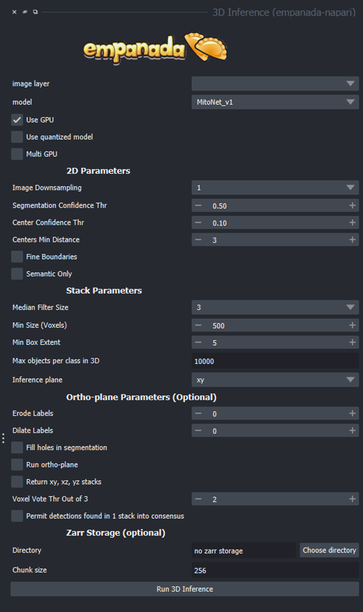
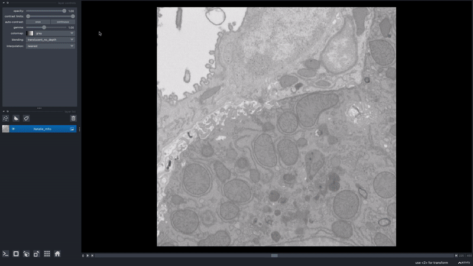

3D Inference#
{kind=link}

General Parameters#
image layer: The napari image layer on which to run model inference.
model: Model to use for inference. Default options are MitoNet_v1, MitoNet_v1_mini, NucleoNet_base_v1 and DropNet_base_v1
Use GPU: Whether to use system GPU for running inference. The box will be check by default if a GPU is found on your system. If no GPU is detected, then this parameter is ignored.
Use quantized model: Whether to use a quantized version of the segmentation model. The quantized model only runs on CPU but uses ~4x less memory and runs 20-50% faster (depending on the model architecture). Results may be 1-2% worse than using the non-quantized version. Quantized models do not work on all operating systems and hardware configurations. Currently, they are not supported by Apple Silicon.
Multi GPU: If the workstation is equipped with more than 1 GPU, inference can be distributed across them. See note in Inference Best Practices.
2D Parameters#
Image Downsampling: Downsampling factor to apply to the input image before running model inference. The returned segmentation will be interpolated to the original image size using the Point Rend module.
Segmentation Confidence Thr: The minimum confidence required for a pixel to be classified as foreground. This only applies for binary segmentation.
Center Confidence Thr: The minimum intensity of a peak in the centers heatmap for it to be considered a true object center.
Centers Min Distance: The minimum distance allowed between centers in pixels.
Fine boundaries: Whether to run Panoptic DeepLab postprocessing at 0.25x the input image resolution. Can correct some segmentation errors at the cost of 4x more GPU/CPU memory.
Semantic Only: Whether to skip panoptic postprocessing and return only a semantic segmentation.
Stack Parameters#
Median Filter Size: Number of image slices over which to apply a median filter to semantic segmentation probabilities.
Min Size (Voxels): The smallest size object that’s allowed in the final segmentation as measured in voxels.
Min Box Extent: The minimum bounding box dimension that’s allowed for an object in the final segmentation. (Filters out big “pancakes”).
Max objects per class in 3D: The maximum number of objects that are allowed for any one of the classes being segmented by the model within a volume.
Inference plane: Plane from which to extract and segment slices. Choice of xy, xz, or yz.
Ortho-plane Parameters (Optional)#
Erode Labels: After running the model on the xy, xz, and yz dimensions, will erode the objects in the label map by the number of pixels selected before the final object consensus. Should help differentiate objects that are separate from one another but close.
Dilate Labels: After running the model on the xy, xz, and yz dimensions, will expand or thicken the objects in the label map by the number of pixels selected before the final object consensus.
Fill holes in segmentation: If checked will fill holes in the segmentation label map.
Run ortho-plane: Whether to run ortho-plane inference. If unchecked, inference will only be run on slices from the Inference plane chosen above.
Return xy, xz, yz stacks: Whether to return the panoptic segmentation stacks created during inference on each plane. If unchecked, only the per-class consensus volumes will be returned.
Voxel Vote Thr Out of 3: Number of stacks from ortho-plane inference in which a voxel must be labeled in order to end up in the consensus segmentation.
Permit detections found in 1 stack into consensus: Whether to allow objects that appear in only a single stack (for example an object only segmented in xy) through to the ortho-plane consensus segmentation.
Zarr Storage (Optional)#
Directory: Path at which to store segmentation results in zarr format. Writing results to disk can help avoid out-of-memory issues when running inference on large volumes. Napari natively supports reading zarr files.
Chunk size: Chunk size to use for the Zarr file. Can be an integer for cube-shaped chunks or a comma separated list of 3 integers to other chunk sizes.
Output#
Returns a 3D labels layer in the napari viewer for each segmentation class and, optionally, panoptic segmentation stacks.
Note
With the new models (NucleoNet and DropNet) a connection with the internet is required for their first use.
Demo#
{kind=link}

Check out the step-by-step tutorial here